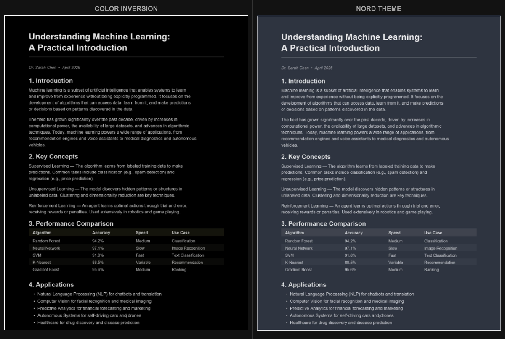

PDF Dunkelmodus vs. Farben invertieren: Was ist der Unterschied?
Schnelle Antwort: Die Farbinvertierung verwandelt jeden Pixel in sein Gegenteil (Weiß wird Schwarz, Blau wird Orange), was Bilder und Diagramme hässlich werden lässt. Der Dunkelmodus wendet eine intelligente Farbtransformation an, die Hintergründe abdunkelt und Text aufhellt, während Bilder, Grafiken und farbige Elemente natürlich aussehen. Für das Lesen von PDFs liefert die Dunkelmodus-Konvertierung fast immer bessere Ergebnisse.
Farbinvertierung verstehen
Die Farbinvertierung ist eine einfache mathematische Operation. Jede Farbe wird durch Werte von 0 bis 255 auf drei Kanälen (Rot, Grün, Blau) dargestellt. Die Invertierung subtrahiert jeden Wert von 255. Reines Weiß (255, 255, 255) wird Reines Schwarz (0, 0, 0). Reines Blau (0, 0, 255) wird Reines Gelb (255, 255, 0). Jede Farbe der Seite durchläuft diese Behandlung, ohne Ausnahme.
Für ein einfaches Textdokument in Schwarz auf Weiß funktioniert die Invertierung perfekt. Schwarzer Text wird weiß, der weiße Hintergrund wird schwarz, und du hast eine lesbare dunkle Seite. Das Problem taucht auf, sobald dein Dokument mehr als nur schwarzweißen Text enthält.
Hier ist, was mit diesen häufigen PDF-Elementen nach der Invertierung passiert:
- Fotos: Hauttöne eines Porträts werden blaugrün-extraterrestrisch. Der blaue Himmel einer Landschaft wird orange. Alles sieht aus wie ein Fotonegativ einer analogen Kamera.
- Diagramme und Schaubilder: Ein rotes Balkendiagramm wird cyan. Eine grüne Trendlinie wird magenta. Die visuelle Bedeutung farbcodierter Daten geht komplett verloren, da man jede Farbe im Kopf umkehren muss, um zu verstehen, was man betrachtet.
- Logos und Markenidentität: Firmenlogos mit spezifischen Markenfarben werden unkenntlich. Ein gelber McDonald's-Bogen wird blau. Ein blaues Facebook-Icon wird orange.
- Farbiger Text: Wenn blaue Hyperlinks, rote Warnungen oder grüne Hervorhebungen vorhanden sind, wechseln alle zu ihren Komplementärfarben. Das kann dazu führen, dass wichtige visuelle Hinweise ihre Bedeutung verlieren.
- Subtile Hintergründe: Viele PDFs verwenden hellgraue, cremefarbene oder bläuliche Hintergründe für Infoboxen und Hervorhebungen. Die Invertierung verwandelt diese in dunkle, oft trübe Flächen, die mit dem Rest der Seite nicht harmonieren.
Dunkelmodus-Konvertierung verstehen
Die Dunkelmodus-Konvertierung ist ein durchdachterer Prozess. Statt jede Farbe mechanisch umzukehren, wendet sie eine intelligente Transformation an, die auf ein komfortables, lesbares Ergebnis ausgelegt ist:
- Hintergründe wechseln von hell zu dunkel. Weiß wird Dunkelgrau oder Schwarz, und andere helle Farben werden in ihre abgedunkelten Entsprechungen konvertiert.
- Text wechselt von dunkel zu hell. Schwarzer Text wird weiß oder hellgrau und behält einen starken Kontrast zum dunklen Hintergrund.
- Bilder werden sorgfältiger behandelt. Je nach Tool können Fotos in ihren Originalfarben belassen oder nur leicht in der Helligkeit angepasst werden, statt komplett invertiert zu werden.
- Farbige Elemente wie Überschriften, Links und Hervorhebungen werden so angepasst, dass sie auf einem dunklen Hintergrund sichtbar bleiben, ohne ihren Charakter komplett zu verändern.
Das Ergebnis ist ein Dokument, das aussieht, als wäre es von Anfang an dunkel gestaltet worden, und nicht wie durch einen Fotonegativ-Filter geschickt.
Vergleich Seite an Seite

So schneiden die beiden Ansätze bei verschiedenen Kriterien ab:
Textlesbarkeit: Beide erzeugen hellen Text auf dunklem Hintergrund. Bei reinem Text ist der Unterschied minimal. Gewinner: Unentschieden.
Bildqualität: Die Invertierung lässt jedes Bild wie ein Farbnegativ aussehen. Der Dunkelmodus bewahrt Bilder deutlich besser. Gewinner: Dunkelmodus, mit Abstand.
Diagramme und Schaubilder: Die Invertierung ändert alle Farben und macht farbcodierte Daten verwirrend. Der Dunkelmodus passt den Hintergrund an, bewahrt aber die Datenfarben besser. Gewinner: Dunkelmodus.
Seitenelemente (Kopfzeilen, Fußzeilen, Infoboxen): Die Invertierung liefert unvorhersehbare Ergebnisse je nach Originalfarben. Der Dunkelmodus behandelt sie konsistent. Gewinner: Dunkelmodus.
Geschwindigkeit und Bequemlichkeit: Die systemweite Invertierung geht mit einer einzigen Tastenkombination. Die Dunkelmodus-Konvertierung erfordert, das PDF durch ein Tool zu schicken. Gewinner: Invertierung, wenn du etwas Sofortiges brauchst.
Dauerhaftigkeit: Die Systeminvertierung ist nur eine Anzeige; deaktiviere sie und das PDF sieht wieder normal aus. Die Dunkelmodus-Konvertierung erstellt eine neue Datei, die dauerhaft und überall dunkel ist. Gewinner: Kommt darauf an, was du willst.
Flexibilität: Die Invertierung bietet nur ein Ergebnis: invertierte Farben. Dunkelmodus-Tools wie der PDF Dark Mode Converter bieten über 16 Themes von warmen Tönen über kühle Grautöne bis hin zu Sepia. Gewinner: Dunkelmodus.
Wann die Invertierung sinnvoll ist
Trotz ihrer Einschränkungen ist die Farbinvertierung in bestimmten Fällen nützlich:
- Schnelles Lesen reiner Textdokumente. Wenn du einen schlichten Textbericht ohne Bilder hast, ist die Invertierung schnell und effektiv. Einschalten, lesen, ausschalten.
- Barrierefreiheitsbedürfnisse. Manche sehbehinderte Menschen finden invertierte Farben leichter zu lesen, unabhängig von der Bildqualität. Der hohe Kontrast hat Priorität, nicht die Bildtreue.
- Nächtliches Lesen im Notfall. Du liegst im Bett, ein PDF kommt per E-Mail und du musst nur einen Absatz prüfen. Die Systeminvertierung dauert eine Sekunde. Das PDF zu konvertieren braucht 10. Manchmal gewinnt die eine Sekunde.
Wenn einer dieser Fälle auf dich zutrifft, ist die Invertierung ein durchaus brauchbares Werkzeug. Unser Leitfaden zum PDF-Farben invertieren beschreibt jede Methode im Detail, oder geh direkt zum Tool PDF-Farben invertieren.
Wann der Dunkelmodus besser ist
Für die meisten Nutzer liefert die Dunkelmodus-Konvertierung in den meisten Fällen bessere Ergebnisse:
- Lehrbücher und Lernmaterialien mit Diagrammen, Abbildungen und farbigen Elementen. Der Dunkelmodus hält sie nutzbar.
- Geschäftsdokumente mit Grafiken, Tabellen und Markenelementen. Der Dunkelmodus bewahrt die visuelle Sprache des Dokuments.
- Geteilte Dokumente. Du kannst ein PDF konvertieren und die dunkle Version mit einem Kommilitonen oder Kollegen teilen. Die Systeminvertierung funktioniert nur auf deinem Bildschirm.
- Lesen auf mehreren Geräten. Ein konvertiertes dunkles PDF erscheint dunkle auf deinem Handy, Tablet, Laptop und Desktop, ohne Konfiguration auf jedem Gerät.
- Lange Lesesitzungen. Wenn du stundenlang an einem Dokument sitzt, zählt die Qualität des Dunkelmodus. Invertierte Bilder werden mit der Zeit störend. Ein richtiger Dunkelmodus bleibt komfortabel. Mehr Tipps findest du in unserem Leitfaden zum PDFs nachts lesen.
Kann man beides kombinieren?
Ja. Manche konvertieren ihre PDFs in den Dunkelmodus und aktivieren zusätzlich die systemweite Invertierung, wenn sie sehr spät am Abend oder in sehr dunklen Räumen lesen. Das invertiert das bereits dunkle PDF doppelt … was es praktisch wieder hell erscheinen lässt. Also nein, beides übereinander funktioniert nicht. Wähle einen Ansatz für das PDF selbst.
Was du kombinieren kannst, ist ein konvertiertes Dunkelmodus-PDF mit dem Nachtlicht des Systems (Blaulichtfilter). Die beiden ergänzen sich gut: Das dunkle PDF reduziert die Gesamthelligkeit und das Nachtlicht reduziert das Blaulicht. Diese Kombination ist der ideale Punkt für komfortables nächtliches Lesen.
Fazit
Die Farbinvertierung ist ein grobes Werkzeug: schnell, kostenlos und auf allen Geräten integriert, aber sie verwüstet Bilder und farbige Elemente. Die Dunkelmodus-Konvertierung ist ein präziseres Werkzeug: Sie braucht ein paar Sekunden zur Einrichtung, aber die Ergebnisse sind deutlich besser für jedes Dokument mit visuellem Inhalt.
Wenn deine PDFs nur Text enthalten, nutze was dir am besten passt. Wenn deine PDFs Bilder, Grafiken, Farben oder irgendwelche visuellen Elemente enthalten, ist die Dunkelmodus-Konvertierung die klare Wahl.
Hol dir einen Dunkelmodus, der gut aussieht. Konvertiere dein PDF mit über 16 Themes - kostenlos, privat, GPU-beschleunigt.
Echte Invertierung gesucht? PDF-Farben invertieren - sofort und privat.
Häufig Gestellte Fragen
Die Farbinvertierung wandelt jeden Pixel in seine Gegenfarbe um, was Bilder und Diagramme verzerrt. Der Dunkelmodus verdunkelt intelligent die Hintergründe und hellt den Text auf, während Bilder natürlich bleiben.
Die Dunkelmodus-Konvertierung liefert für die meisten PDFs bessere Ergebnisse, weil sie Bilder und farbige Elemente bewahrt. Die Invertierung funktioniert gut bei reinen Textdokumenten.
Ja. Die Invertierung lässt alle Bilder wie Fotonegative aussehen. Die Dunkelmodus-Konvertierung passt Hintergründe und Text an und behandelt Bilder sorgfältiger, sodass sie erkennbar bleiben.